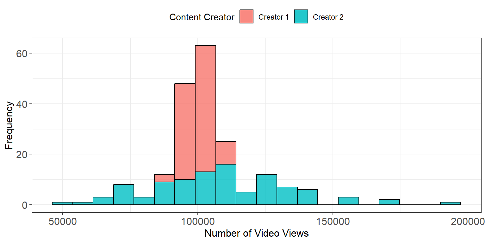
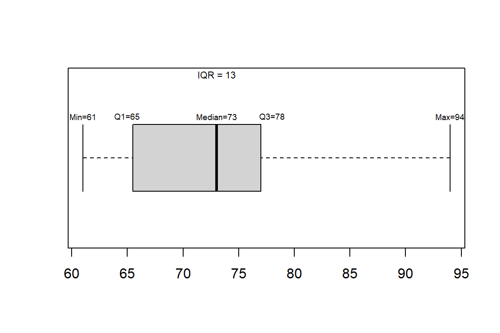
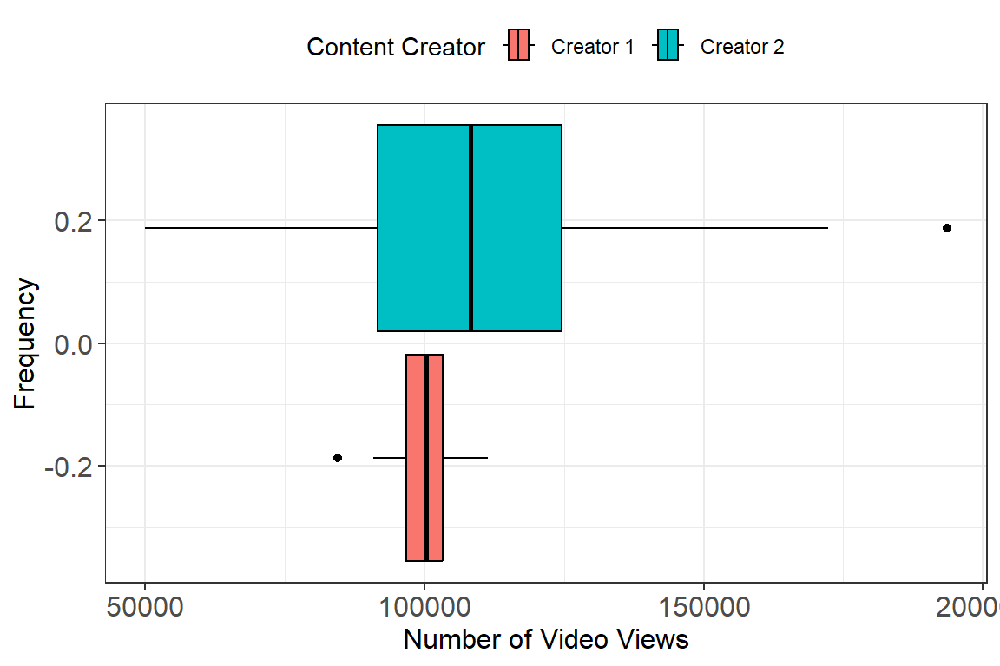

Week 3 Notes
STAT 251 Section 01
NO CLASS — Labor Day (Monday, September 7, 2026)
Describing spread
A description of a distribution is not complete without a measure of spread to sit alongside its center. Week 2 covered the measures of location and position — the mean, median and mode, and the percentiles and quartiles. This week asks a different question: how far do the observations fall from one another, and from the center? As with the measures of center, everything below applies to quantitative variables only.
Measures of spread
Even the simplest statistical description of a variable should include at least one measure of center and one measure of spread. The reason being that measures of center or location can be misleading if we do not consider how much the observations vary. Consider the following example which gives the distributions of the number of youtube video views of two content creators.

From this example we can see that both distributions have approximately the same mean. However, Content Creator 2 has considerably more variability in the number of views and, on a good day, can potentially get up to double his normal number of views.
In some sense giving several percentiles or the quartiles together tells us how different values are spread out across the distribution but there are other measures of spread that are preferred. One of the first and simplest measures we can use is the range. The range measures the distance between the largest and smallest observation and can be computed by subtracting the minimum value from the maximum value. Because the range uses the two most extreme points of the data it is extremely susceptible to outliers. For this reason, the range is not a measure of spread that gets used often.
A better measure of spread that can be computed from the first and third quartiles is the interquartile range or IQR. The IQR tells us how dispersed the inner \(50\%\) of the data.
The IQR is defined as
\[IQR = Q3 - Q1\]
It measures the distance between \(Q1\) and \(Q3\)
The IQR is very resistant to outliers since it ignores the extreme ends of a distribution
What is the IQR for the previous example of statistics students exam scores?
Deviations, variance and the standard deviation
The range and the IQR each describe spread using only two numbers out of the whole sample. A measure that uses every observation starts from the idea of a deviation: how far a single observation falls from the mean.
\[ \text{deviation of } x_i = x_i - \bar{x} \]
An observation above the mean has a positive deviation, one below it has a negative deviation, and an observation sitting exactly at the mean has a deviation of zero.
- A natural first instinct is to average the deviations. That does not work, and it fails for a reason worth understanding: the deviations always sum to zero. The mean is the balancing point of the data, so the positive deviations cancel the negative ones exactly, for every dataset. Averaging them would report the same spread — zero — for data that is tightly packed and data that is wildly scattered.
Consider the ten die rolls \(X = \{1,2,3,3,4,4,4,5,6,6\}\), which have \(\bar{x} = 3.8\):
| \(x_i\) | \(x_i - \bar{x}\) | \((x_i - \bar{x})^2\) |
|---|---|---|
| 1 | -2.8 | 7.84 |
| 2 | -1.8 | 3.24 |
| 3 | -0.8 | 0.64 |
| 3 | -0.8 | 0.64 |
| 4 | 0.2 | 0.04 |
| 4 | 0.2 | 0.04 |
| 4 | 0.2 | 0.04 |
| 5 | 1.2 | 1.44 |
| 6 | 2.2 | 4.84 |
| 6 | 2.2 | 4.84 |
The deviation column sums to 0, as it must (R reports a value like 1.8e-15 rather than an exact 0 here, which is rounding error in the arithmetic, not a real difference). The fix is to remove the signs before averaging, and the standard choice is to square them. That gives the variance, written \(s^2\) for a sample:
\[ s^2 = \frac{\sum_{i=1}^{n}(x_i - \bar{x})^2}{n-1} \]
For the die rolls the squared deviations sum to 23.6, so \(s^2 = 23.6 / 9 = 2.622\).
- Squaring has a side effect: the variance is in squared units. If the data are waiting times in minutes, the variance is in minutes squared, which is not a quantity anyone can picture. Taking the square root undoes it and returns a number on the original scale. That is the standard deviation:
\[ s = \sqrt{s^2} = \sqrt{\frac{\sum_{i=1}^{n}(x_i - \bar{x})^2}{n-1}} \]
For the die rolls, \(s = 1.619\) — back in “number of pips” rather than pips squared. Roughly speaking, \(s\) is the typical distance of an observation from the mean.
x <- c(1,2,3,3,4,4,4,5,6,6)
mean(x)## [1] 3.8var(x) # s^2## [1] 2.622222sd(x) # s## [1] 1.619328Why divide by \(n-1\) rather than \(n\)?
Because the deviations are not \(n\) independent pieces of information. They are computed from \(\bar{x}\), which was itself computed from the same data, and we already know they must sum to zero. Fix any \(n-1\) of the deviations and the last one is forced. So there are only \(n-1\) degrees of freedom among them, and dividing by \(n-1\) rather than \(n\) is what makes \(s^2\) an unbiased estimate of the population variance \(\sigma^2\). Dividing by \(n\) would systematically underestimate it.
- Both \(s\) and \(s^2\) are \(\geq 0\), and both equal zero only when every observation is identical.
- Like the mean, both use every observation, so like the mean, both are strongly influenced by outliers. When a distribution is skewed or has outliers, the IQR is the more honest description of spread.
A five number summary
Combining several numerical descriptors together is the best way to get a good feel for the characteristics of a distribution. A common method for summarizing a set of data is to use the five number summary which combines the minimum, maximum, and quartiles together.
- The five number summary: \(\text{Minimum} \ \ Q1 \ \ \text{Median} \ \ Q3 \ \ \text{Maximum}\)
Consider the five number summary of the statistics student exam scores:
\[61 \ \ 65 \ \ 73 \ \ 78 \ \ 94\]
The median tells us the center of the data, the quartiles show us the spread of the inner half of the data, the minimum and maximum tell us the total extent of spread in exam scores.
Often these five numbers are displayed graphically in a plot called a box and whisker plot (often called a boxplot). Together with the histogram, the boxplot is one of the most useful graphical summaries because it condenses a lot of information into an easy to create display.
- Steps for constructing a boxplot:
- Mark the position of the first and third quartile and draw a box connecting them.
- Draw a line inside of the box showing the position of the median
- From each end of the box, draw a line extending outward \(1.5 \times IQR\).
- The lower whisker is drawn to either the minimum value or \(Q1 - 1.5 \times IQR\) depending on which is greater.
- The upper whisker extends to either the maximum value or \(Q3 + 1.5 \times IQR\) depending on which is smaller
- Any observations extending beyond \(1.5 \times IQR\) below Q1 or above Q3 are marked and considered outliers.
Example: consider the boxplot constructed for our example of student exam scores
\[\{61,61,65,65,66,68,69,73,74,75,76,78,79,90,94\}\]

Example2: consider the boxplot constructed for variable \(X\)
\[X = \{-5.7, -2.6, -1.5, -1.3, -0.4, 0.2, 1.5, 2.2, 2.3, 2.6, 2.9, 10.4 \}\]

- boxplots are great for comparing distributions and identifying skew. Consider our example for comparing the youtube views of two content creators.

- Using the boxplots makes the disparity in spread between the two Content Creators much more apparent. Boxplots are also great for identifying skew in a distribution. Consider the plot below which shows how you can interpret skew in relation to a boxplot.

- Notice from the plot above that the boxplot will not show if the distribution has multiple peaks or gaps. For this reason, a boxplot should always be plotted along with a histogram to ensure you capture all important features of a distribution.